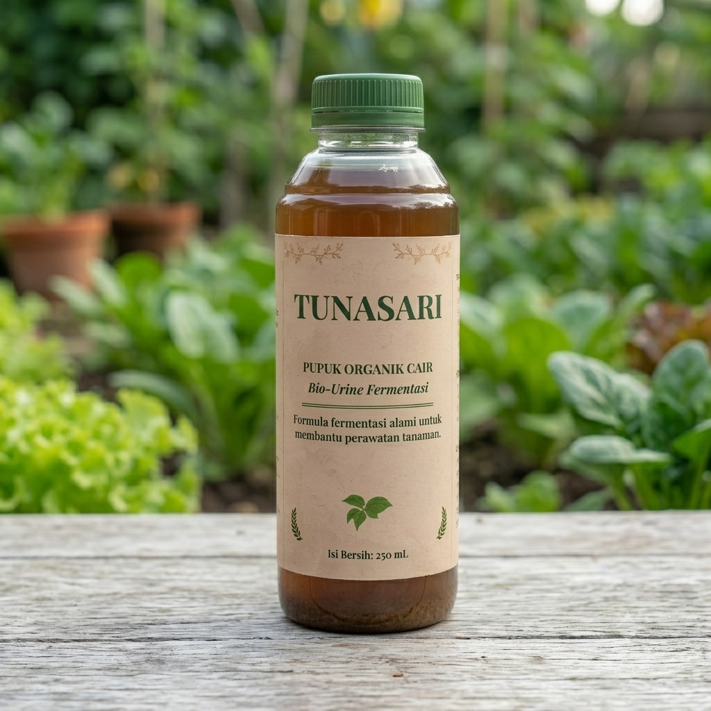

Katalog Produk Utama
Produk berkualitas tinggi hasil olahan tangan warga Padukuhan Gunung Cilik
Organik Alami

Pertanian Organik
Pupuk Organik Cair (POC)
Nutrisi cair kaya mikronutrien dari hasil fermentasi alami. Membantu mempercepat pembungaan, memperkuat akar, dan menjaga kesuburan tanah.
Kemasan / Botol
Rp 25.000
Beli
Best Seller

Media Tanam
Pupuk Organik Padat
Kompos matang siap pakai yang kaya unsur hara makro & mikro. Sangat efektif memperbaiki struktur tanah yang tandus dan menutrisi tanaman.
Kemasan / Karung
Rp 20.000
Beli
Produk Kreatif

Kerajinan Tangan
Lilin Aroma Terapi
Lilin aromaterapi handmade khas Gunung Cilik dengan wangi menenangkan. Cocok untuk meredakan stres, rileksasi, dan dekorasi ruangan.
Harga / Pcs
Rp 15.000
Beli